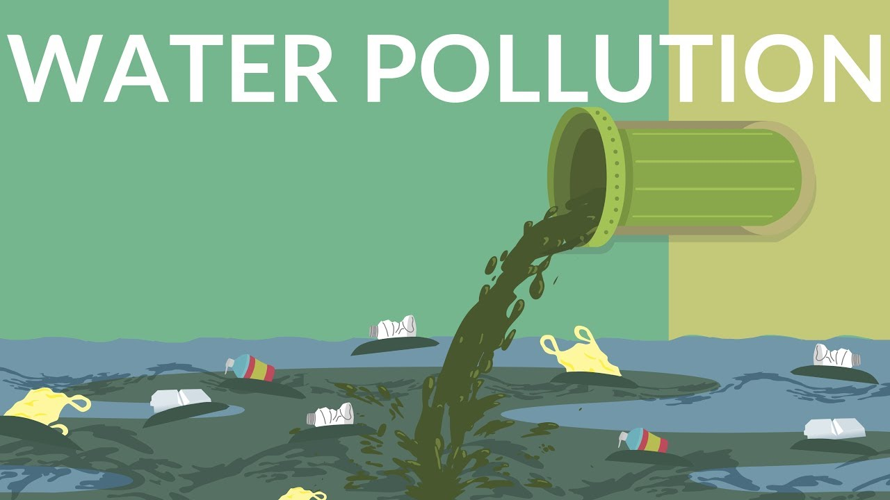
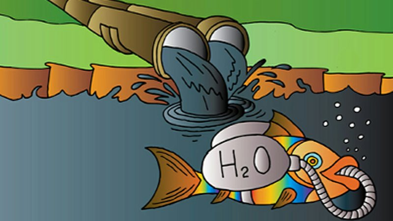
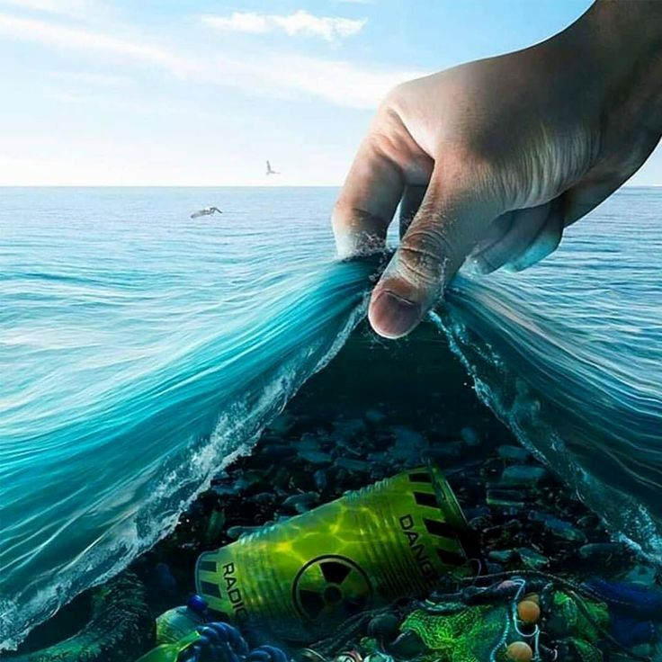
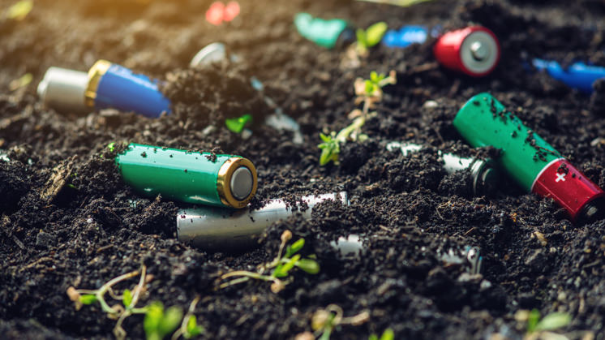
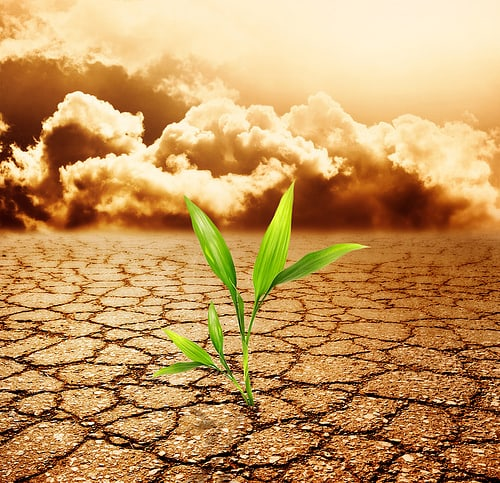
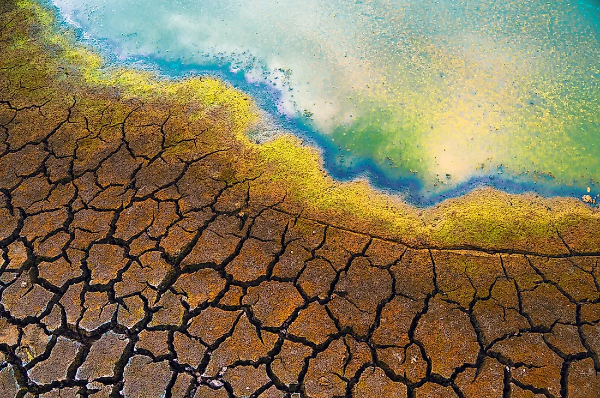

Какво причиняват проблемите, свързани със замърсяването на водата:
Основен източник на замърсяване на питейната вода са отпадните и канални води. От началото на Индустриалната революция фабриките изхвърлят непотребните продукти от своята дейност в реките, езерата и моретата. Това вреди не само на местната флора и фауна, но и на растенията и животните на стотици километри разстояние. Освен от производството, замърсяване се получава и от домакинствата.
Изострянето на проблема с недостига на водните ресурси води до социално икономически и регионални екологични проблеми:
– сериозно се застрашава здравето и живота на хората;
– ограничават се темповете на икономическо развитие на отделните региони и страни;
– силно се нарушава състоянието на водните екосистеми;
- силно увреждане на почвите и земите, които се напояват с тези води.



Основните проблеми, свързани с почвата и нейното замърсяване
Различните замърсители имат различни източници, но най-важните от тях вероятно са промишлени дейности в миналото. Те оставят след себе си райони със сериозно замърсяване на почвата, главно с метали, катрани и други свързани вещества. Друг важен източник на замърсяване е военната дейност, включително на площадки за обучение. Един от най-лошите примери за замърсяване на почвата в Европа е в бивша Югославия, където са разположени противопехотни мини, причиняващи екстремна форма на замърсяване на почвата.
В този контекст два метала са особено важни: кадмий и мед. Кадмият е примес във фосфатните торове и винаги има допълнително съдържание на кадмий в почвата, когато се използват. Съдържанието може да е много малко, но е кумулативно. Тъй като кадмият е канцерогенно вещество, трябва да наблюдаваме внимателно неговото натрупване. Доста работа е свършена и продължава да се върши, за да се определи количественото измерение на този проблем и да се проучи как да се намали съдържанието на кадмий в торовете. Медта се намира в райони, в които има лозя и където металът е бил използван в миналото като противогъбично средство. За съжаление тази мед се е натрупала в почвата. След като тези и други метали бъдат добавени към почвата, те остават там и има малко реалистични перспективи за отстраняването им.
Пестицидите са друг проблем, свързан със селското стопанство. Знаем например, че органохлорните пестициди, които отдавна са забранени, все още са в почвите в цяла Европа. При настоящите пестициди акцентът върху тяхното въздействие върху почвената биота е доста ограничен. Те могат да създадат проблеми, които все още не сме забелязали. Освен това по мое мнение регулаторният режим относно въздействието на селскостопанските химикали върху почвата е доста слаб.



Замърсяване и увреждане на плодните и неплодните растения
Растенията биват увреждани, замърсявани и изкуствено модифицирани спрямо или заради човешките нужди. Хората замърсяват почвата, но от там следва, че и растенията, и техните плодове биват увредени с пестицидите, които им прилагат, изкуствените торове, а и понякога се използват горе посочените метали, за по-бърз растеж и по-голям обем на плода, но за сметка на това има шанс самият плод да е канцерогенен.